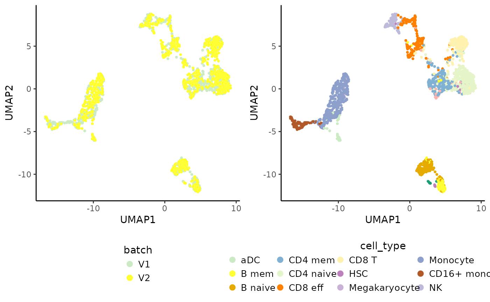

QuickStart
# Packages
library("Coralysis")## Warning: replacing previous import 'Matrix::det' by 'SparseM::det' when loading
## 'Coralysis'
suppressPackageStartupMessages(library("SingleCellExperiment"))
# Import data from Zenodo
data.url <- "https://zenodo.org/records/14845751/files/pbmc_10Xassays.rds?download=1"
pbmc_10Xassays <- readRDS(file = url(data.url))
# Prepare data: checks 'logcounts' format & removes non-expressed genes
pbmc_10Xassays <- PrepareData(object = pbmc_10Xassays)## Data in `logcounts` slot already of `dgCMatrix` class...## 2000/2000 features remain after filtering features with only zero values.
# Multi-level integration
set.seed(123)
pbmc_10Xassays <- RunParallelDivisiveICP(object = pbmc_10Xassays, batch.label = "batch", L = 10, threads = 2) ##
## Building training set...## Training set successfully built.##
## Computing cluster seed.##
## Initializing divisive ICP clustering...## | | | 0% | |======== | 11% | |================ | 22% | |======================= | 33% | |=============================== | 44% | |======================================= | 56% | |=============================================== | 67% | |====================================================== | 78% | |============================================================== | 89% | |======================================================================| 100%##
## Divisive ICP clustering completed successfully.##
## Predicting cell cluster probabilities using ICP models...## Prediction of cell cluster probabilities completed successfully.##
## Multi-level integration completed successfully.
# Compute integrated PCA from joint probability
set.seed(125)
pbmc_10Xassays <- RunPCA(object = pbmc_10Xassays)## Divisive ICP: selecting ICP tables multiple of 4
# Run UMAP
set.seed(1204)
pbmc_10Xassays <- RunUMAP(object = pbmc_10Xassays, umap.method = "uwot", n_neighbors = 20, min_dist = 0.3)
# Visualize integrated data
vars <- c("batch", "cell_type")
plots <- lapply(X = vars, FUN = function(x) {
PlotDimRed(object = pbmc_10Xassays, color.by = x, point.size = 0.5, point.stroke = 0.5, legend.nrow = 3)
})
cowplot::plot_grid(plotlist = plots, ncol = 2, align = "vh") # join plots together
R session
# R session
sessionInfo()## R version 4.4.2 (2024-10-31)
## Platform: x86_64-pc-linux-gnu
## Running under: Ubuntu 24.04.1 LTS
##
## Matrix products: default
## BLAS: /usr/lib/x86_64-linux-gnu/openblas-pthread/libblas.so.3
## LAPACK: /usr/lib/x86_64-linux-gnu/openblas-pthread/libopenblasp-r0.3.26.so; LAPACK version 3.12.0
##
## locale:
## [1] LC_CTYPE=C.UTF-8 LC_NUMERIC=C LC_TIME=C.UTF-8
## [4] LC_COLLATE=C.UTF-8 LC_MONETARY=C.UTF-8 LC_MESSAGES=C.UTF-8
## [7] LC_PAPER=C.UTF-8 LC_NAME=C LC_ADDRESS=C
## [10] LC_TELEPHONE=C LC_MEASUREMENT=C.UTF-8 LC_IDENTIFICATION=C
##
## time zone: UTC
## tzcode source: system (glibc)
##
## attached base packages:
## [1] stats4 stats graphics grDevices utils datasets methods
## [8] base
##
## other attached packages:
## [1] SingleCellExperiment_1.28.1 SummarizedExperiment_1.36.0
## [3] Biobase_2.66.0 GenomicRanges_1.58.0
## [5] GenomeInfoDb_1.42.3 IRanges_2.40.1
## [7] S4Vectors_0.44.0 BiocGenerics_0.52.0
## [9] MatrixGenerics_1.18.1 matrixStats_1.5.0
## [11] Coralysis_1.0.0
##
## loaded via a namespace (and not attached):
## [1] rlang_1.1.5 magrittr_2.0.3 flexclust_1.4-2
## [4] compiler_4.4.2 systemfonts_1.2.1 vctrs_0.6.5
## [7] reshape2_1.4.4 stringr_1.5.1 pkgconfig_2.0.3
## [10] crayon_1.5.3 fastmap_1.2.0 XVector_0.46.0
## [13] labeling_0.4.3 scuttle_1.16.0 rmarkdown_2.29
## [16] ggbeeswarm_0.7.2 UCSC.utils_1.2.0 ragg_1.3.3
## [19] xfun_0.50 modeltools_0.2-23 bluster_1.16.0
## [22] zlibbioc_1.52.0 cachem_1.1.0 beachmat_2.22.0
## [25] jsonlite_1.8.9 DelayedArray_0.32.0 BiocParallel_1.40.0
## [28] irlba_2.3.5.1 parallel_4.4.2 aricode_1.0.3
## [31] cluster_2.1.6 R6_2.6.0 bslib_0.9.0
## [34] stringi_1.8.4 RColorBrewer_1.1-3 limma_3.62.2
## [37] jquerylib_0.1.4 Rcpp_1.0.14 iterators_1.0.14
## [40] knitr_1.49 snow_0.4-4 FNN_1.1.4.1
## [43] Matrix_1.7-1 igraph_2.1.4 tidyselect_1.2.1
## [46] abind_1.4-8 yaml_2.3.10 codetools_0.2-20
## [49] doRNG_1.8.6.1 lattice_0.22-6 tibble_3.2.1
## [52] plyr_1.8.9 withr_3.0.2 ggrastr_1.0.2
## [55] evaluate_1.0.3 desc_1.4.3 pillar_1.10.1
## [58] rngtools_1.5.2 foreach_1.5.2 generics_0.1.3
## [61] ggplot2_3.5.1 sparseMatrixStats_1.18.0 munsell_0.5.1
## [64] scales_1.3.0 class_7.3-22 glue_1.8.0
## [67] metapod_1.14.0 pheatmap_1.0.12 LiblineaR_2.10-24
## [70] tools_4.4.2 BiocNeighbors_2.0.1 ScaledMatrix_1.14.0
## [73] SparseM_1.84-2 RSpectra_0.16-2 locfit_1.5-9.11
## [76] RANN_2.6.2 fs_1.6.5 scran_1.34.0
## [79] Cairo_1.6-2 cowplot_1.1.3 grid_4.4.2
## [82] edgeR_4.4.2 colorspace_2.1-1 GenomeInfoDbData_1.2.13
## [85] beeswarm_0.4.0 BiocSingular_1.22.0 vipor_0.4.7
## [88] cli_3.6.3 rsvd_1.0.5 textshaping_1.0.0
## [91] S4Arrays_1.6.0 dplyr_1.1.4 uwot_0.2.2
## [94] doSNOW_1.0.20 gtable_0.3.6 sass_0.4.9
## [97] digest_0.6.37 SparseArray_1.6.1 dqrng_0.4.1
## [100] farver_2.1.2 htmltools_0.5.8.1 pkgdown_2.1.1
## [103] lifecycle_1.0.4 httr_1.4.7 statmod_1.5.0References
Amezquita R, Lun A, Becht E, Carey V, Carpp L, Geistlinger L, Marini F, Rue-Albrecht K, Risso D, Soneson C, Waldron L, Pages H, Smith M, Huber W, Morgan M, Gottardo R, Hicks S (2020). “Orchestrating single-cell analysis with Bioconductor.” Nature Methods, 17, 137-145. https://www.nature.com/articles/s41592-019-0654-x.
Sousa A, Smolander J, Junttila S, Elo L (2025). “Coralysis enables sensitive identification of imbalanced cell types and states in single-cell data via multi-level integration.” bioRxiv. doi:10.1101/2025.02.07.637023